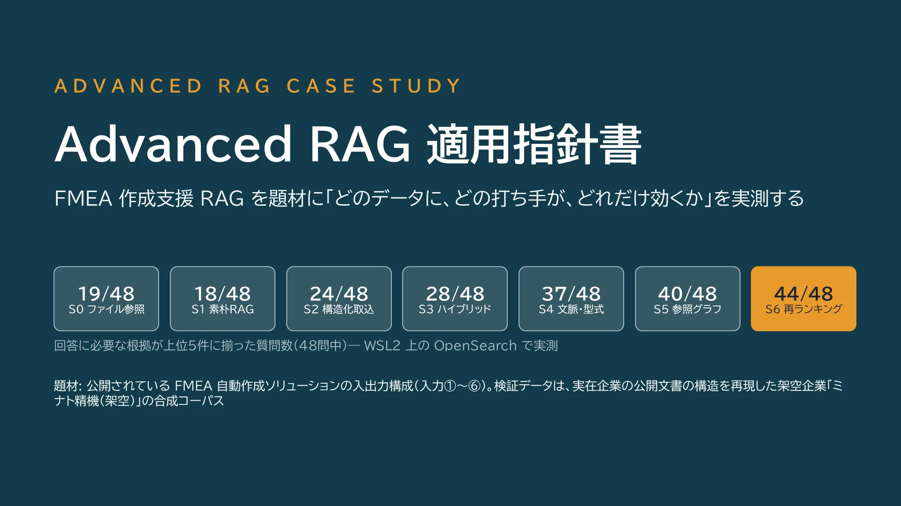
スライド 1 のテキストと解説
本資料は、前作「Advanced RAG 実践ガイド」の続編です。FMEA作成支援という具体的なユースケースを題材に、実際のプロジェクトで出会う厄介なデータ（分冊マニュアル、神エクセル、特許の図と符号、スキャンPDFなど）に対して、どのAdvanced RAG技術をどの順番で入れると、どれだけ改善するのかを、WSL2上のOpenSearchで実際に検証した結果をまとめています。数値はすべて実測値ですが、データは実在企業の公開文書の構造を再現した架空の合成データです。
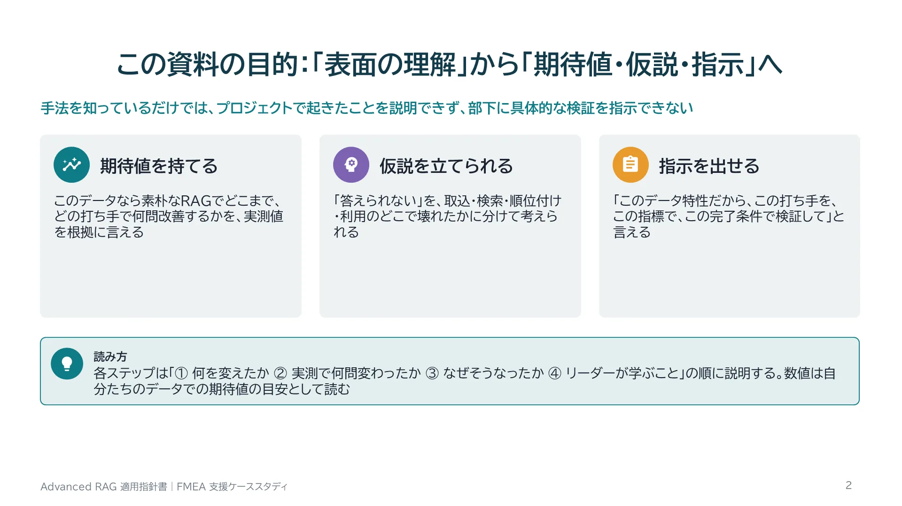
スライド 2 のテキストと解説
前作で手法の全体像を学んでも、実プロジェクトでは「なぜこの質問だけ答えられないのか」「次に何を試すべきか」を即答できなければなりません。本資料は、具体的なデータ特性ごとに、素朴な実装がどう失敗し、どの打ち手でどれだけ改善したかを一歩ずつ示します。読み終えたときに、データを見て期待値を言える、失敗に仮説を立てられる、部下に検証を指示できる、の3つができることを目標にしています。
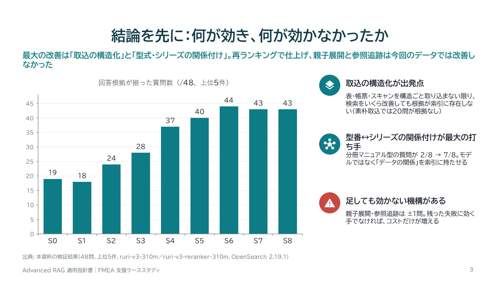
スライド 3 のテキストと解説
上位5件に回答根拠が揃った質問数の推移です。ファイル参照と素朴なRAGは18〜19問で、ほぼ同じ水準でした。構造化した取込で24問、ハイブリッド検索で28問、文脈付与と型式の正規化で37問、図の符号などの参照グラフで40問、再ランキングで44問まで上がりました。一方、表を表ごと読む親子展開と、別冊への参照追跡は、このデータでは1問減るか横ばいでした。48問なので1問の差は誤差の範囲ですが、「追加すれば必ず良くなるわけではない」という教訓として扱います。
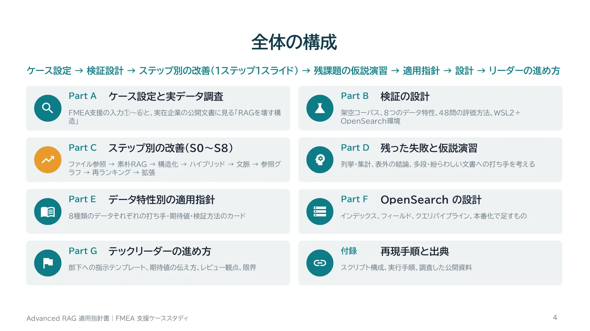
スライド 4 のテキストと解説
Part C が本資料の中心で、S0からS8までの各ステップを、構成・結果・理由・学びの順に追います。Part E の適用指針は、データ特性ごとに打ち手と期待値を1枚にまとめたカードで、実プロジェクトで最も参照する部分になるはずです。
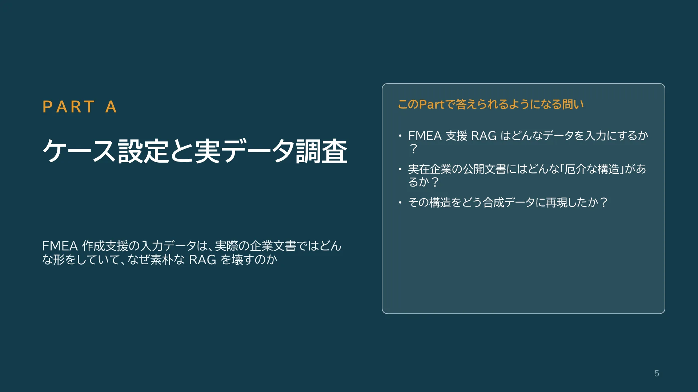
スライド 5 のテキストと解説
Part A ではまず題材と、実データの調査結果を示します。合成データの妥当性は、ここで示す実データの構造をどれだけ再現できているかにかかっています。
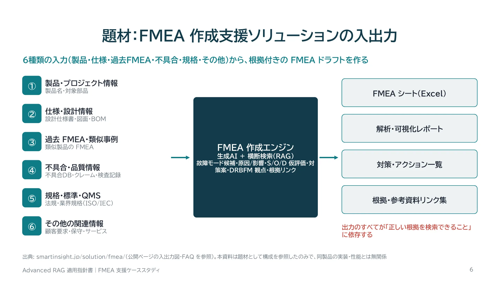
スライド 6 のテキストと解説
題材にしたのは、公開されている生成AIによるFMEA自動作成ソリューションの入出力構成です。入力は①製品・プロジェクト情報、②仕様・設計情報（設計仕様書・図面・BOM）、③過去のFMEA・類似事例、④不具合・品質情報（不具合DB・クレーム・検査記録）、⑤規格・標準・QMS、⑥その他（顧客要求・保守情報）の6種類です。出力はFMEAシート、リスクの可視化、対策一覧、根拠資料のリンク集です。同ページのFAQでも「スキャンPDFはOCRで対応」「回答には根拠を必ず添付」とされており、どれもRAGの検索品質が前提になる機能です。本資料はこの構成を題材として借りただけで、当該製品の内部実装や性能を評価するものではありません。
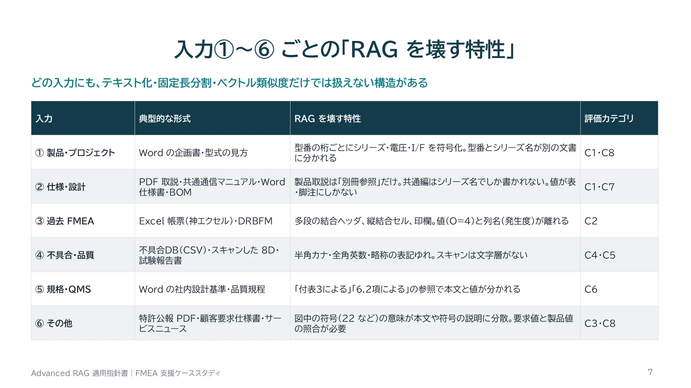
スライド 7 のテキストと解説
入力データごとに、素朴なRAGを壊す典型的な特性を整理しました。この8つの特性を、後の評価でC1〜C8のカテゴリとして使います。①製品情報の型式の見方は、型番からシリーズを特定するための鍵になります。②の仕様は、分冊マニュアル（C1）と仕様書の表（C7）が問題になります。③過去FMEAは神エクセル（C2）、④はスキャンPDF（C4）と表記ゆれDB（C5）、⑤は条項と付表の参照（C6）、⑥の特許は図と符号の分離（C3）が問題です。そして実際のFMEA支援の質問は、これらを横断します（C8）。
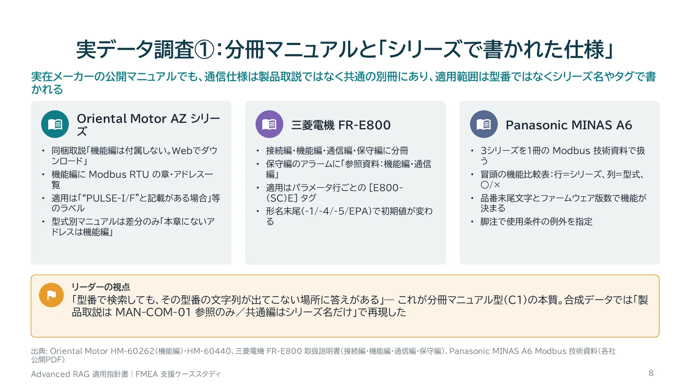
スライド 8 のテキストと解説
オリエンタルモーターのAZシリーズでは、本体同梱の取説に「機能編は付属しません、Webからダウンロード」と書かれ、Modbus RTUの章やアドレス一覧は機能編にあります。機能編の適用範囲は品名ではなく「PULSE-I/Fと記載がある場合」のようなラベルで表されます。三菱電機FR-E800は、接続編・機能編・通信編・保守編に分かれ、パラメータ1行ごとに[E800-(SC)E]のような角括弧タグで適用機種が示されます。パナソニックMINAS A6は、行がシリーズ、列が型式の○×表と脚注で機能差を示します。どれも「型番で検索しても、その型番の文字列が出てこない場所に答えがある」構造です。
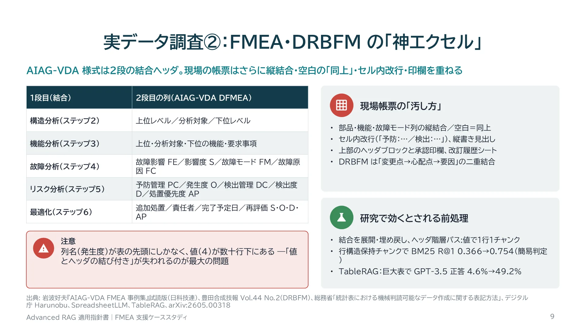
スライド 9 のテキストと解説
AIAG-VDAのDFMEA様式は、1段目に「構造分析（ステップ2）」「故障分析（ステップ4）」などのステップ名が結合セルで並び、2段目に故障影響FE、影響度S、故障モードFM、故障原因FC、発生度O、検出度Dなどの列が並びます。現場の帳票は、さらに部品や機能の列を縦結合し、空白を「同上」として使い、セル内で改行し、上部に承認印欄を置きます。総務省の機械判読ルールがまさに避けるべき書き方として挙げているものです。研究では、結合を展開して埋め戻し、「ヘッダの階層パス: 値」の形で1行1チャンクに直列化する前処理が最も効くとされています。行単位で構造を保ったチャンクで、BM25のRecall@1が0.366から0.754に上がったという報告もあります（文字列一致の簡易判定）。
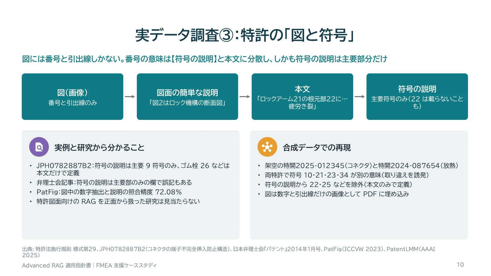
スライド 10 のテキストと解説
日本の特許明細書は、【図面の簡単な説明】で図の種類を、【発明を実施するための形態】の本文で「端子18は係止段部20に係合せず」のように名称と符号を組で書き、末尾の【符号の説明】で主な符号の名称を列挙します。実例のJPH0782887B2では、符号の説明に載っているのは主要な9符号だけで、他の符号は本文中にしか定義がありません。弁理士会の記事も、符号の説明は主要部分のみで誤記もあると指摘しています。図そのものは画像なので、図中の数字はOCRしないと取り出せず、PatFigの研究では図中の数字の抽出と照合の精度は72%程度でした。「図3の符号22は何で、どんな故障に関係するか」に答えるには、図の種類、図中の符号、名称、本文の故障記述の4つを結ぶ必要があります。
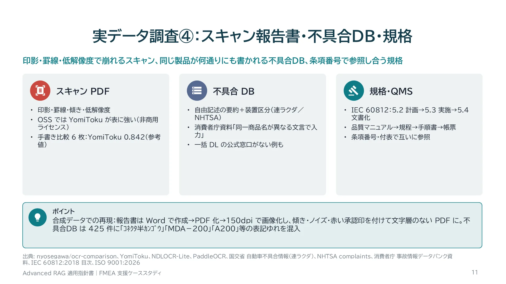
スライド 11 のテキストと解説
スキャン文書は、印影の重なり、罫線の縦棒の誤認識、傾き、低解像度が典型的な難所です。日本語手書きメモ6枚の比較では、YomiTokuが0.842とOSSで最良でした（件数が少なく参考値）。YomiTokuは表構造の認識に対応しますが、OSS版は非商用ライセンスです。不具合DBの実例として、国交省の不具合情報やNHTSAのcomplaintsは、装置区分と自由記述の要約を持ちます。消費者庁の資料自体が「同一企業名・商品名が異なる文言で入力されている」と表記ゆれを課題に挙げています。規格はIEC 60812のように箇条番号で構造化され、社内QMS文書は品質マニュアル→規程→手順書→帳票の階層で、互いに条項番号で参照します。
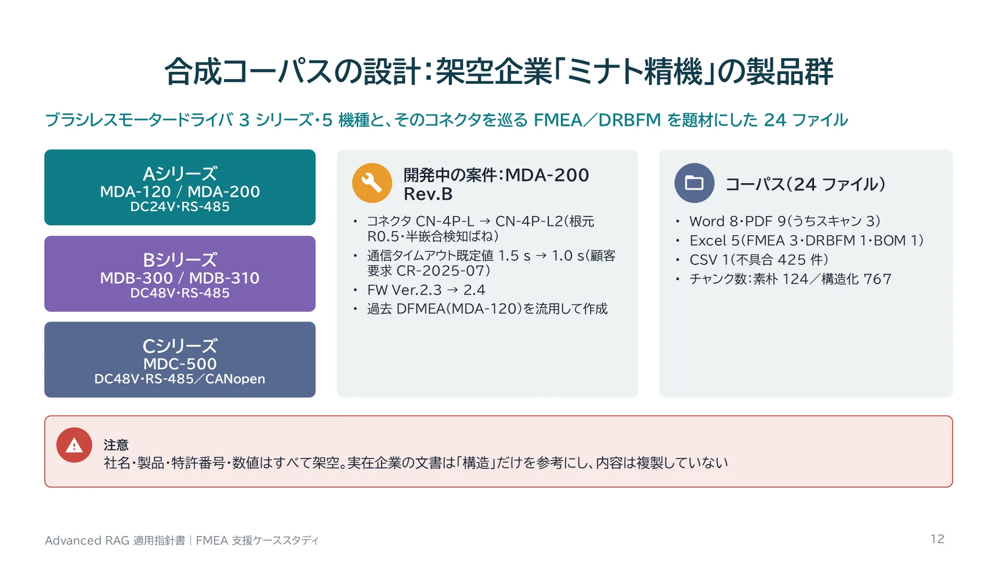
スライド 12 のテキストと解説
架空企業ミナト精機（架空）は、ブラシレスモータードライバのAシリーズ（MDA-120、MDA-200）、Bシリーズ（MDB-300、MDB-310）、Cシリーズ（MDC-500）を持っています。いま進めているのは、MDA-200のRev.B改良開発です。変更点は、市場不具合（コネクタの半嵌合による通信断）を受けたコネクタの変更と、顧客要求に合わせた通信タイムアウト既定値の変更です。このDFMEAとDRBFMを作るために、過去のFMEA、不具合DB、試験報告書、社内基準、特許、顧客要求を横断して調べる、という設定です。
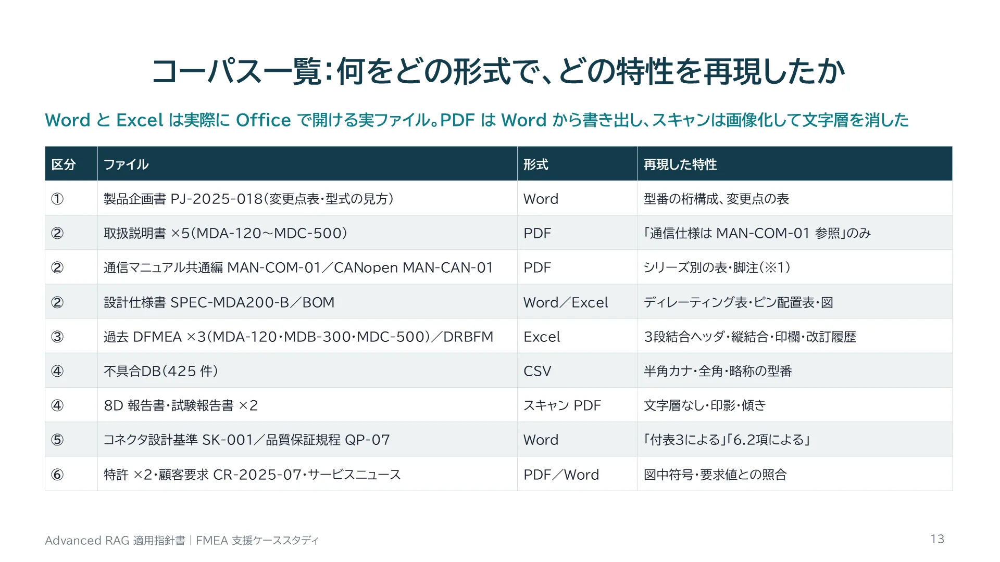
スライド 13 のテキストと解説
コーパスは生成スクリプトで作り、PDFはWordのCOM経由で実際に書き出しています。こうすることで、PDFの表が実物と同じように抽出されにくくなり、現実に近い失敗が起こります。スキャンPDFは、Wordで作った報告書をPDF化し、150dpiの画像にして、傾き、ノイズ、ぼかし、赤い承認印を加えました。
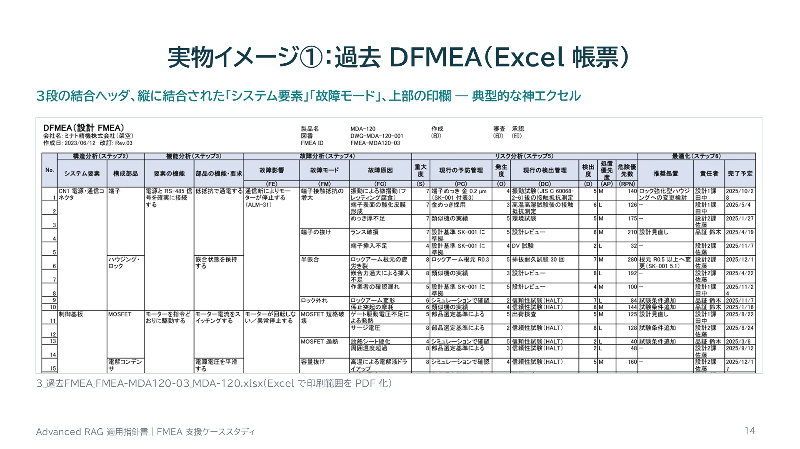
スライド 14 のテキストと解説
実際に生成したExcelファイルを印刷イメージで書き出したものです。1段目にステップ名、2段目に列名、3段目に(S)(O)(D)などの略号が入り、システム要素や故障モードは縦に結合されています。人間には読みやすい帳票ですが、セルを左上から順に読むと、4という数字が発生度なのか検出度なのかが分からなくなります。
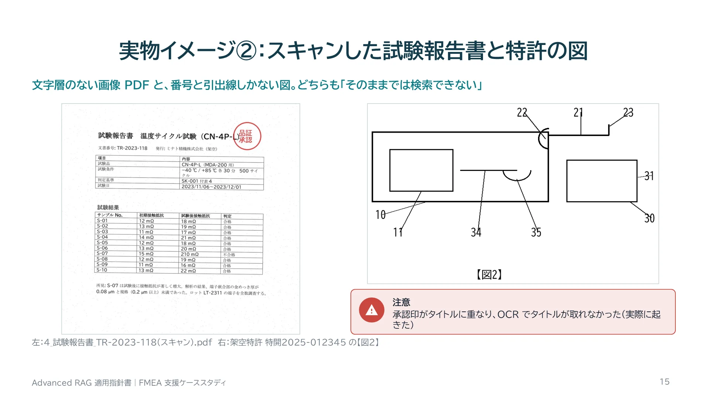
スライド 15 のテキストと解説
左はスキャンした温度サイクル試験報告書です。赤い承認印がタイトルに重なっており、実際にOCRでタイトルが取れませんでした。右は架空特許の図2で、10、21、22などの数字と引出線しかありません。どの数字が何を指すかは、本文と符号の説明を読まないと分かりません。
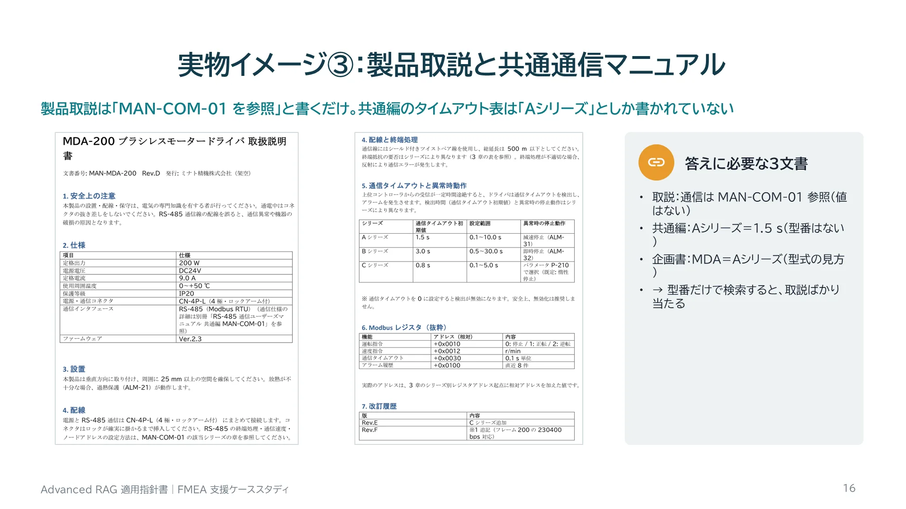
スライド 16 のテキストと解説
左はMDA-200の取扱説明書で、仕様表の通信インタフェース欄に「通信仕様の詳細は別冊MAN-COM-01を参照」とだけ書かれています。右は共通編で、通信タイムアウトの初期値がシリーズ別の表になっています。MDA-200がAシリーズであることは、どちらにも書かれていません。製品企画書の「型式の見方」にだけ「MDA=Aシリーズ」とあります。つまり「MDA-200の通信タイムアウト初期値は？」に答えるには3つの文書をつなぐ必要があります。
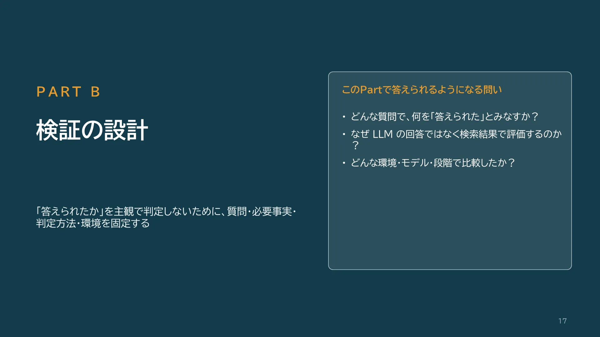
スライド 17 のテキストと解説
Part B は検証の設計です。ここが曖昧だと、後の数字はすべて信用できなくなります。
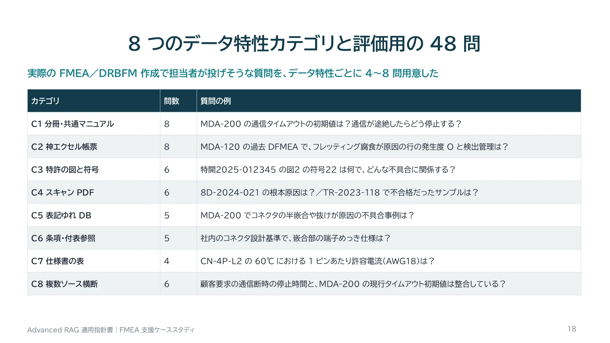
スライド 18 のテキストと解説
評価用の質問は、データ特性ごとに4〜8問、合計48問です。どれもFMEAやDRBFMの作成時に実際に必要になる質問で、たとえば「MDA-120の過去DFMEAで、フレッティング腐食が原因の行の発生度と検出管理は？」「8D-2024-021の根本原因は？」「特開2025-012345の図2の符号22は何で、どんな不具合に関係する？」などです。C8は複数ソースの横断で、顧客要求と製品の初期値の照合のように、2つ以上の文書の根拠が必要です。
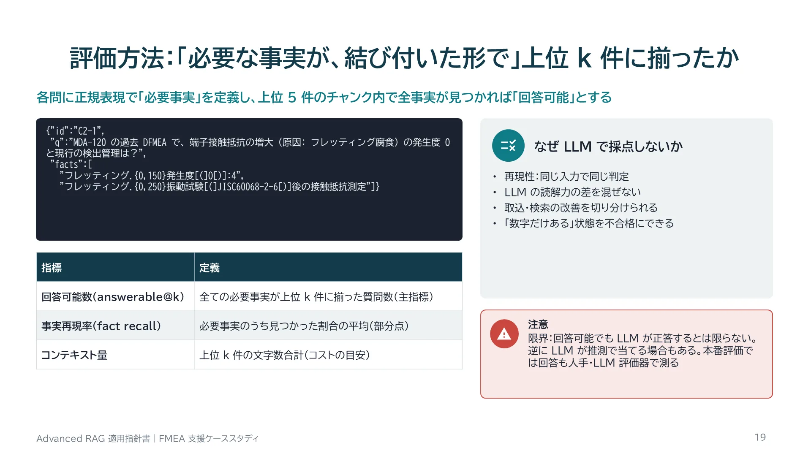
スライド 19 のテキストと解説
評価はLLMの回答ではなく、LLMに渡すコンテキスト、つまり検索結果の上位k件で行いました。各質問に、回答に必要な事実を正規表現で定義します。ポイントは「結び付き」も判定に含めることです。たとえばFMEAの質問では、単に数字の4があるだけでなく「フレッティング…発生度(O):4」のように、故障原因と列名と値が1つのチャンクの中で結び付いている必要があります。文字列は判定前にNFKC正規化し、空白を除去しています。LLMを使わない理由は3つあります。再現できること、LLMの読解力の差が混ざらないこと、そして検索段階の改善効果を切り分けられることです。限界として、ここで回答可能となっても、LLMが正しく答えるとは限りません。
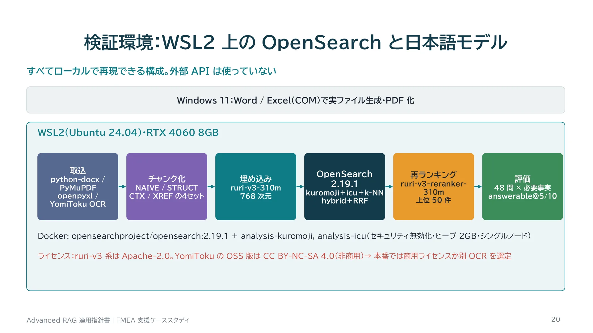
スライド 20 のテキストと解説
検証はWindows 11上のWSL2（Ubuntu 24.04）で行いました。OpenSearch 2.19.1の公式Dockerイメージに、日本語形態素解析のanalysis-kuromojiと、NFKC正規化のためのanalysis-icuを追加しています。2.19はハイブリッド検索の順位融合RRFに対応した最初の版です。埋め込みは日本語特化のcl-nagoya/ruri-v3-310m（768次元）、再ランキングはcl-nagoya/ruri-v3-reranker-310mで、どちらもApache-2.0ライセンスです。OCRはYomiTokuで、表構造を保ったMarkdownを出力しますが、OSS版は非商用ライセンスなので、本番では商用ライセンスか別のOCRを選びます。GPUはRTX 4060（8GB）で、索引作成と全評価の実行は数分で終わります。
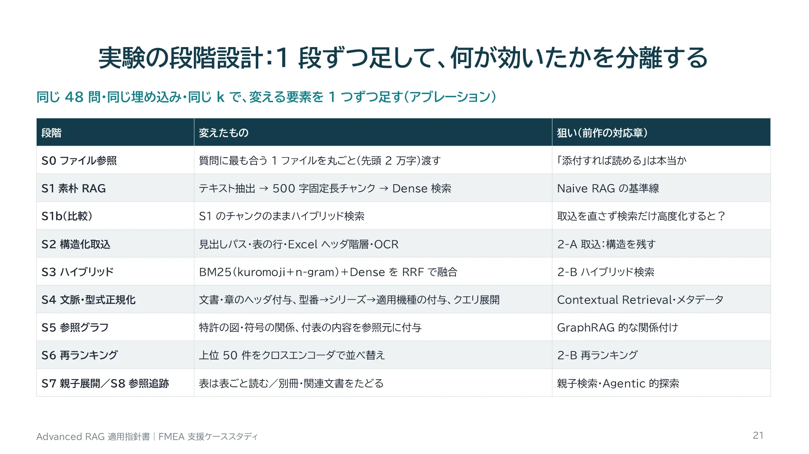
スライド 21 のテキストと解説
S0のファイル参照から始めて、1段ずつ要素を足していきます。前作で学んだ「2つの変数を同時に動かさない」原則に従い、各段では1つだけを変えています。S1bは、素朴なチャンクのままハイブリッド検索だけを足した比較用の段です。「取込を直さずに検索だけ高度化するとどうなるか」を確かめるために入れています。
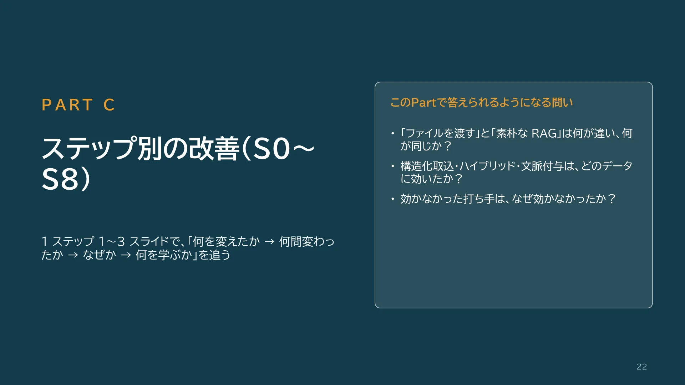
スライド 22 のテキストと解説
Part C が本資料の中心です。上部のS0〜S8の表示で、いまどの段階かを示しています。
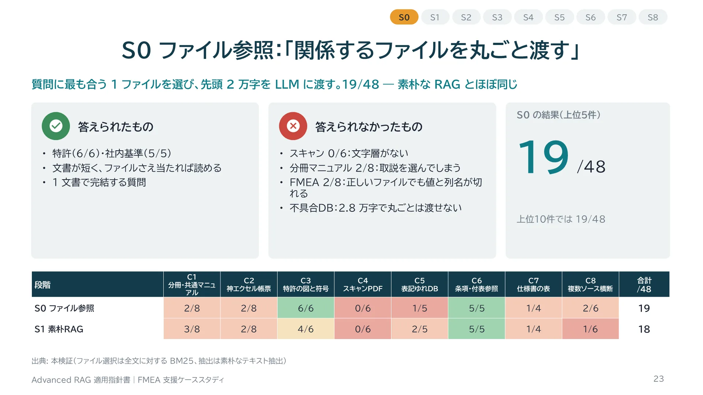
スライド 23 のテキストと解説
S0は、チャット画面にファイルを添付して質問するような使い方を模擬しています。質問に最も合う1ファイルをBM25で選び、そのファイルから素朴に抽出したテキストの先頭2万字を渡します。結果は48問中19問でした。特許（C3）と社内基準（C6）は、ファイルさえ当たれば中身が短いので答えられます。一方、スキャンPDF（C4）は文字層がないので0問、分冊マニュアル（C1）はファイル自体を取り違え、FMEA（C2）は正しいファイルを選んでも、数字と列名の結び付きが失われていて答えられません。
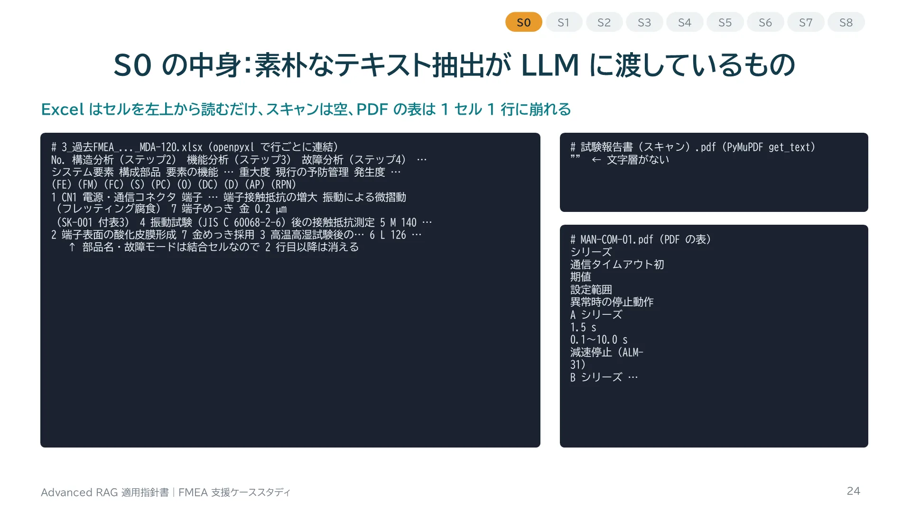
スライド 24 のテキストと解説
素朴なテキスト抽出が実際に出力したものです。左はFMEAのExcelで、ヘッダの行と値の行が離れ、「7 端子めっき 金 0.2 µm」の次の行に「4 振動試験…」と続きます。この4が発生度だと分かるには、数十行上の3段ヘッダを数えて対応付ける必要があります。結合セルの値は左上のセルにしか入っていないので、2行目以降は「CN1コネクタ」という部品名も消えています。右上のスキャンPDFは、文字層がないので空文字です。右下の共通マニュアルの表は、1セル1行に崩れ、どの値がどのシリーズかは列の順番から推測するしかありません。
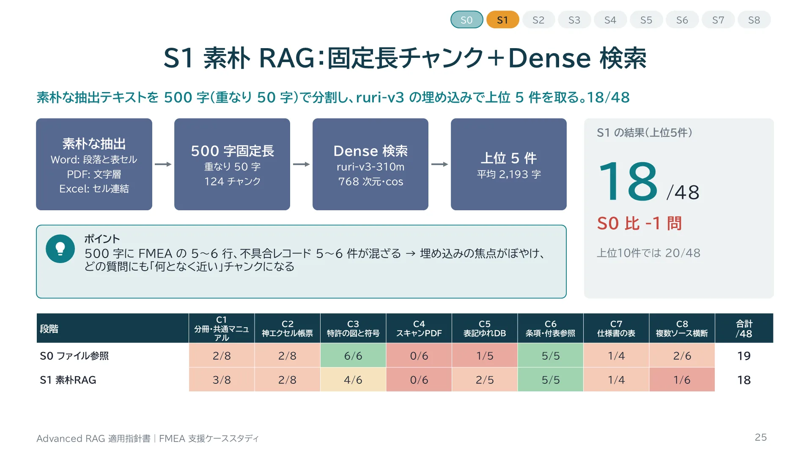
スライド 25 のテキストと解説
S1は典型的な最初のPoCです。S0と同じ素朴な抽出をして、500字ずつ分割し、日本語埋め込みモデルruri-v3-310mでベクトル化し、質問に近い上位5件を渡します。結果は18問で、S0とほぼ同じです。チャンク数は24ファイルでわずか124個でした。500字に複数のFMEA行や複数の不具合レコードが混ざるため、埋め込みの焦点がぼやけます。ファイル参照より文脈は短くなりますが、取込段階で失われた情報は戻らないので、正答できる質問の範囲は変わりません。
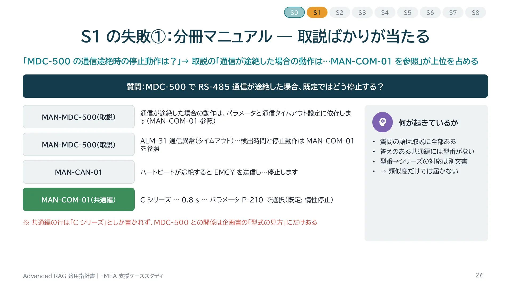
スライド 26 のテキストと解説
分冊マニュアル型の典型的な失敗です。質問に含まれる「MDC-500」「通信」「途絶」「停止」という語は、MDC-500の取扱説明書にすべて出てきます。取説の運転の章には「通信が途絶した場合の動作は、パラメータと通信タイムアウト設定に依存します」とあり、アラーム表にも「通信異常」があります。そのため類似度では取説が上位を占めますが、そこには値がありません。答えは共通編の「Cシリーズ…惰性停止」にありますが、共通編にはMDC-500という文字列がなく、Cシリーズと書かれているだけです。たまたま共通編の表がチャンク内で崩れずに残り、上位に入ったときだけ答えられる、運任せの状態です。
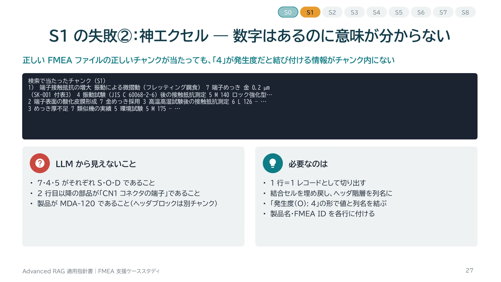
スライド 27 のテキストと解説
FMEAの質問では、S1でも正しいファイルのチャンクは上位に来ます。しかしチャンクの中身は「（フレッティング腐食） 7 端子めっき 金 0.2 µm（SK-001 付表3） 4 振動試験… 5 M 140」です。7が重大度、4が発生度、5が検出度であることは、表の先頭のヘッダ3行を数えないと分からず、そのヘッダは別のチャンクにあります。LLMがこれを見て「発生度は4」と答えたなら、それは推測です。たまたま当たるかもしれませんが、根拠付きの回答とは言えません。本検証の判定では「発生度(O):4」のように列名と値が結び付いていることを要求したので、不合格になります。
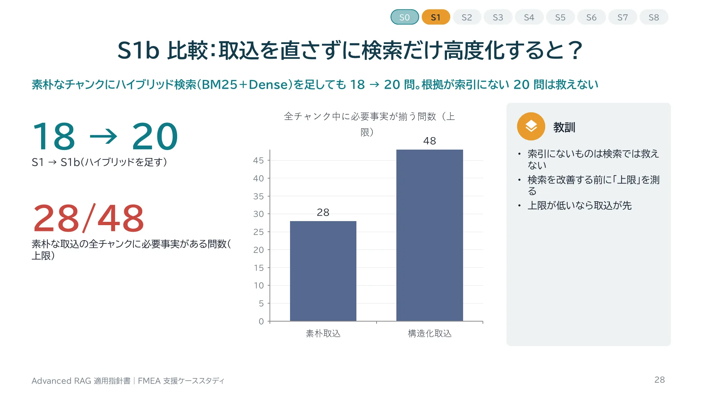
スライド 28 のテキストと解説
S1bは比較用の段です。素朴なチャンクのまま、BM25とDenseのハイブリッド検索だけを足しました。結果は2問増の20問です。そもそも素朴な取込のチャンク全体を見ても、必要事実が揃うのは48問中28問しかありません（スキャンの文字層がない、表の値と列名が離れているなど）。つまり残りの20問は、検索をどれだけ高度化しても答えられません。前作で学んだ「候補にないものは再ランキングでは救えない」の取込版で、「索引にないものは検索では救えない」ということです。
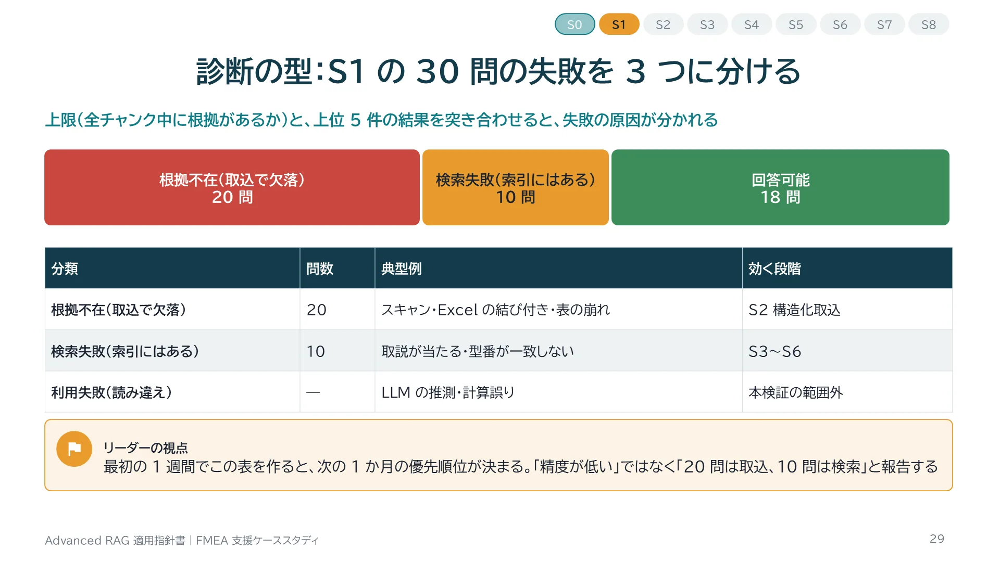
スライド 29 のテキストと解説
前作の「根拠不在・検索失敗・利用失敗」の分類を、実データに当てはめます。素朴取込の全チャンクに必要事実があるのは28問です。S1で答えられたのは18問なので、28問のうち10問は「索引にはあるが上位5件に来なかった」検索失敗です。残りの20問は、索引に根拠そのものがない根拠不在（正確には取込による欠落）です。この分類ができると、打ち手の優先順位が決まります。20問の根拠不在を直すのが取込の構造化（S2）、10問の検索失敗を直すのがハイブリッドや文脈付与（S3以降）です。利用失敗（LLMが読み違える）は、本検証では評価範囲外です。
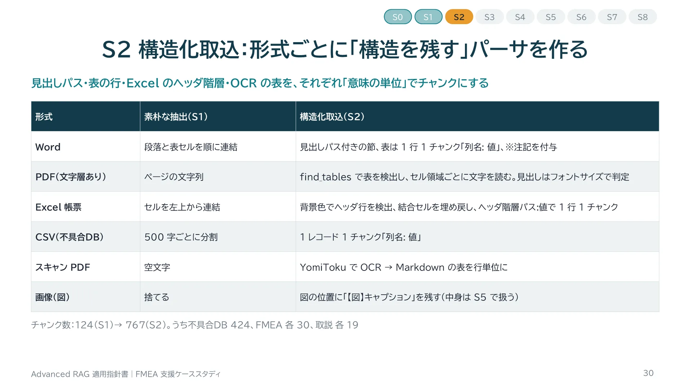
スライド 30 のテキストと解説
S2では、ファイル形式ごとに構造を残すパーサを用意しました。Wordは見出しスタイルから章のパスを作り、表は1行を1チャンクにして「列名: 値」の形にします。表の直後の※注記はその表の各行に付けます。PDFはPyMuPDFのfind_tablesで表を検出し、各セルの領域を切り出してテキストを読みます。Excelは背景色の付いた行をヘッダと判定し、結合セルを埋め戻してヘッダの階層パスを列名にします。CSVは1レコード1チャンク、スキャンPDFはYomiTokuでOCRし、出力されたMarkdownの表を同じように行単位にします。チャンク数は124から767に増えました。
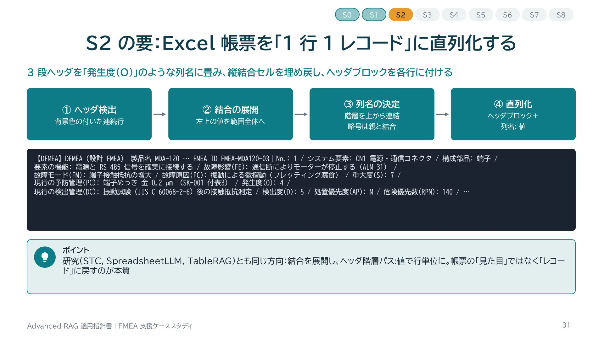
スライド 31 のテキストと解説
Excel帳票の処理を具体的に示します。まず背景色の付いた連続行をヘッダとみなします（書式は機械にとって数少ない手掛かりです）。次に結合セルの範囲を展開して、各セルに左上の値を埋め戻します。列ごとにヘッダの値を上から並べ、末尾が「(O)」のような略号なら1つ上の列名と結合して「発生度(O)」とします。最後に、上部のヘッダブロック（製品名・図番・FMEA ID）を各行の先頭に付けます。こうすると、1行のチャンクだけで「MDA-120のFMEAの、CN1コネクタ端子の、フレッティング腐食が原因の行の、発生度は4」が読めるようになります。
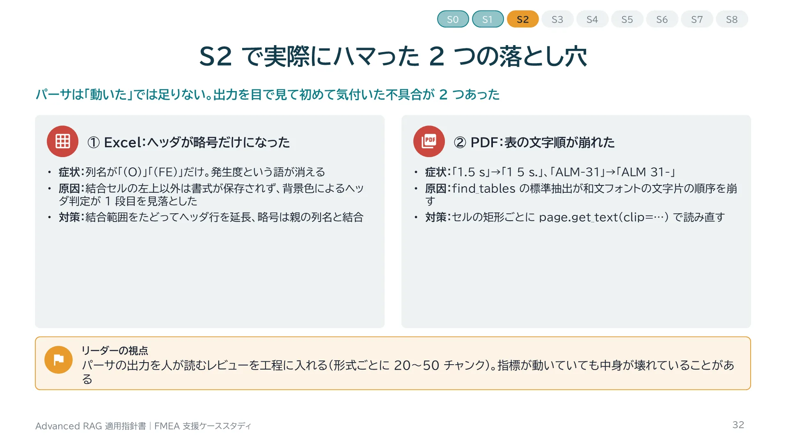
スライド 32 のテキストと解説
実装中に実際に起きた不具合です。1つ目はExcelで、結合セルの左上以外のセルは書式が保存されないため、背景色でヘッダを判定すると1段目の行がヘッダと見なされず、列名が「(O)」のような略号だけになっていました。検索も評価も一見動くので、出力を目で見るまで気付きませんでした。2つ目はPDFで、find_tablesの標準の抽出は日本語フォントの文字の並び順を崩し、「1.5 s」が「1 5 s.」、「ALM-31」が「ALM 31-」になっていました。セルの領域を切り出して文字を読み直す方法に変えて解決しました。リーダーとしては、パーサの出力を人がサンプリングして読むレビューを工程に組み込むことが重要です。
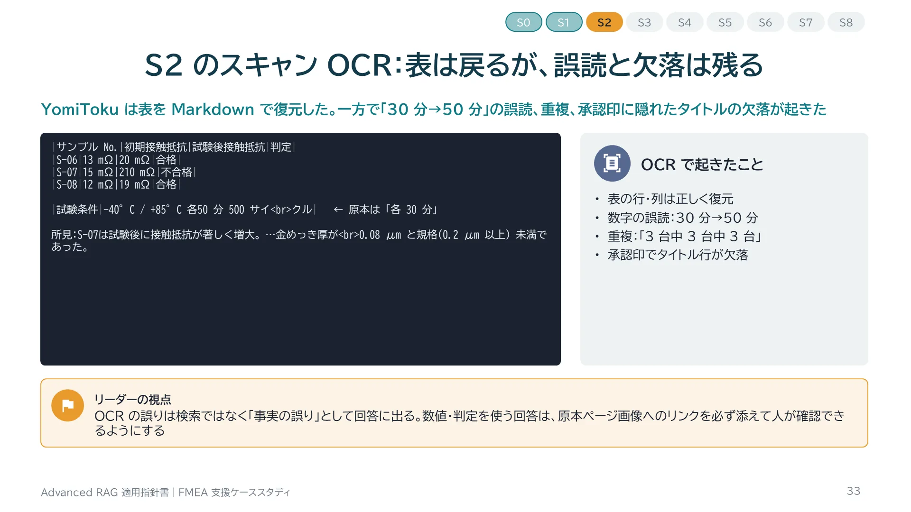
スライド 33 のテキストと解説
スキャンした試験報告書をYomiTokuでOCRした実際の出力です。罫線の表は行と列ごとに正しく復元され、S-07の行の「210 mΩ・不合格」も読めています。一方で、試験条件の「各30分」は「各50分」に誤読され、8D報告書では「3台中3台中3台」のような重複も起きました。最も影響が大きかったのは、赤い承認印がタイトルに重なり、タイトル行がOCRで取れなかったことです。そのため文書の題名として本文の「所見:…」が使われ、後の文脈付与（S4）で誤ったヘッダが付く原因になりました。OCRの結果も、パーサと同じく人がサンプリングして確認する必要があります。
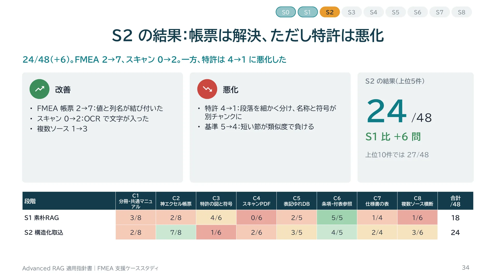
スライド 34 のテキストと解説
構造化取込の結果は24問で、S1から6問増えました。FMEA（C2）は2問から7問に大きく改善し、スキャン（C4）も0問から2問になりました。一方、特許（C3）は4問から1問に悪化しています。素朴な500字チャンクでは「ロックアーム21の根元部22…疲労き裂」と符号の説明が近くにあり、たまたま1つのチャンクに収まっていましたが、構造化で段落ごとに細かく分けた結果、名称と符号を結ぶ情報が別々のチャンクに分かれたためです。構造化は万能ではなく、分け方によって失われる文脈があるというトレードオフを示しています。この悪化はS3とS5で回復します。
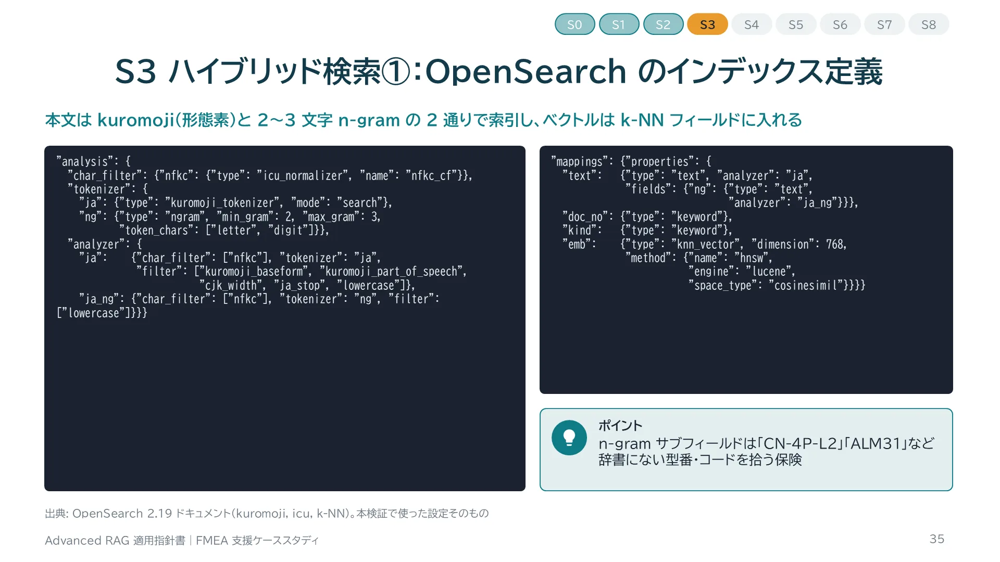
スライド 35 のテキストと解説
OpenSearchのインデックス設定です。本文フィールドtextは、ICUのNFKC正規化（全角・半角や大文字・小文字を揃える）をかけた上で、kuromojiで形態素解析します。さらにサブフィールドtext.ngに2〜3文字のn-gramを持たせ、型番や略語のように辞書にない語でも部分一致で拾えるようにしました。doc_noはキーワード型で、文書を絞り込むフィルタに使います。埋め込みは768次元のknn_vectorで、HNSWとコサイン類似度を使います。小規模なのでluceneエンジンにしています。
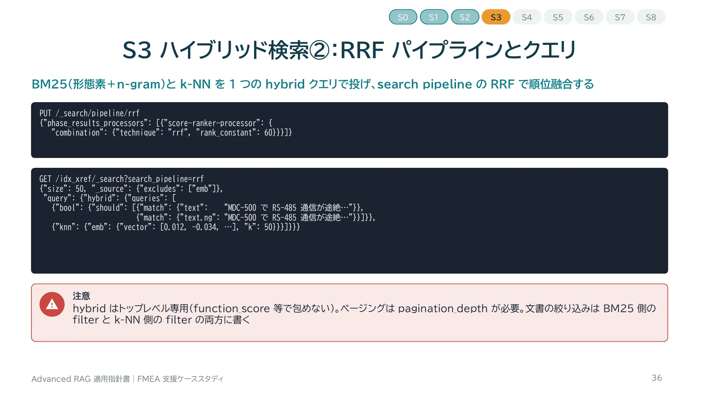
スライド 36 のテキストと解説
ハイブリッド検索は、search pipelineにRRF（Reciprocal Rank Fusion）のscore-ranker-processorを登録し、hybridクエリでBM25側とk-NN側の2つのサブクエリを投げます。BM25側は形態素のmatchとn-gramのmatchをshouldで組み合わせています。RRFはスコアの尺度の違いを気にせず順位だけで融合できるので、BM25とコサイン類似度を混ぜるのに向いています。rank_constantは標準的な60にしました。hybridクエリはトップレベルでしか使えない、ページングにはpagination_depthが要る、といった制約があります。
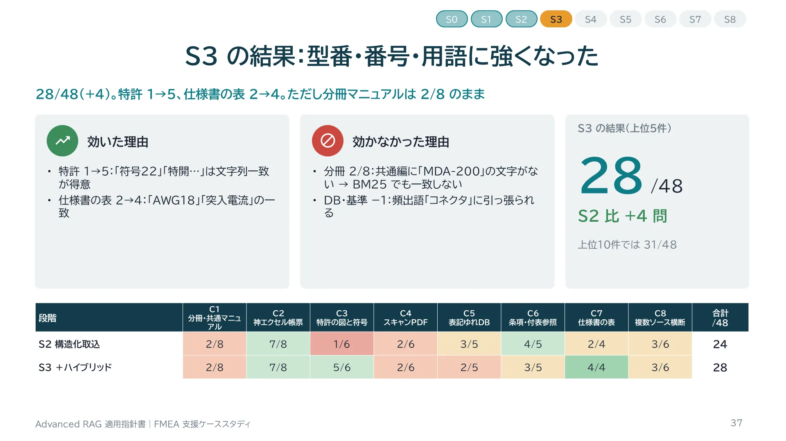
スライド 37 のテキストと解説
ハイブリッド検索で28問になりました。特許（C3）は1問から5問に回復しました。「符号22」「特開2025-012345」のような数字や番号は、意味の埋め込みよりBM25の文字列一致が得意だからです。仕様書の表（C7）も「AWG18」「突入電流」のような用語の一致で改善しました。一方、分冊マニュアル（C1）は2問のままです。共通編には「MDA-200」という文字列がないので、BM25でも一致しません。型番とシリーズの関係そのものを索引に持たせる必要があり、それがS4です。また不具合DBと基準が1問ずつ減っています。BM25が「コネクタ」などの頻出語に引っ張られた影響です。
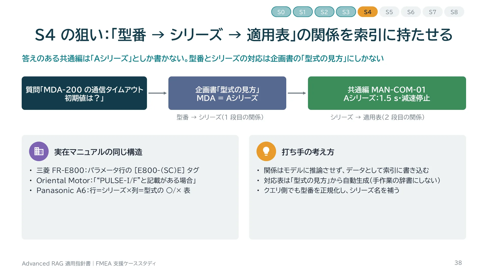
スライド 38 のテキストと解説
S4が狙う問題の構造です。ユーザーは「MDA-200」と型番で質問します。答えは共通編のタイムアウト表の「Aシリーズ 1.5 s」の行にありますが、そこにはMDA-200という文字列がありません。MDA-200がAシリーズであることは、製品企画書の「型式の見方」の表に「MDA=Aシリーズ」とあるだけです。つまり、型番からシリーズへ、シリーズから適用表へという2段の関係をたどる必要があります。実在のマニュアルでも、三菱電機の角括弧タグ、オリエンタルモーターの「PULSE-I/Fと記載がある場合」のラベル、パナソニックのシリーズ×型式表など、同じ構造が見られます。
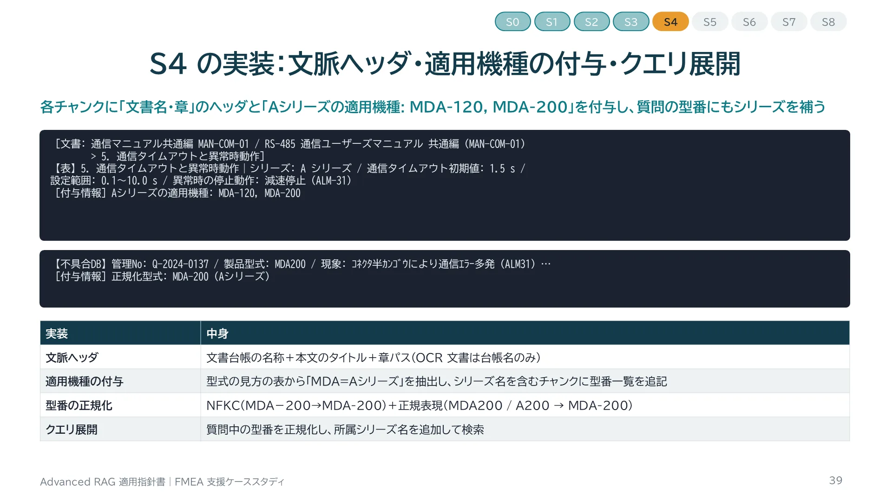
スライド 39 のテキストと解説
実装は3つです。1つ目は文脈ヘッダで、各チャンクの先頭に「文書: 通信マニュアル共通編（MAN-COM-01）> 5. 通信タイムアウトと異常時動作」のような文書名と章のパスを付けます。前作のContextual Retrievalを、LLMを使わず構造から決定的に作る版です。2つ目は付与情報で、チャンクにシリーズ名があれば「Aシリーズの適用機種: MDA-120, MDA-200」を、型番があれば正規化した型番とシリーズを追記します。対応表は企画書の型式の見方の表から自動で作り、表記ゆれ（ＭＤＡ－２００、A200）はNFKC正規化と正規表現で揃えます。3つ目はクエリ展開で、質問の「MDA-200」に「Aシリーズ」を補って検索します。
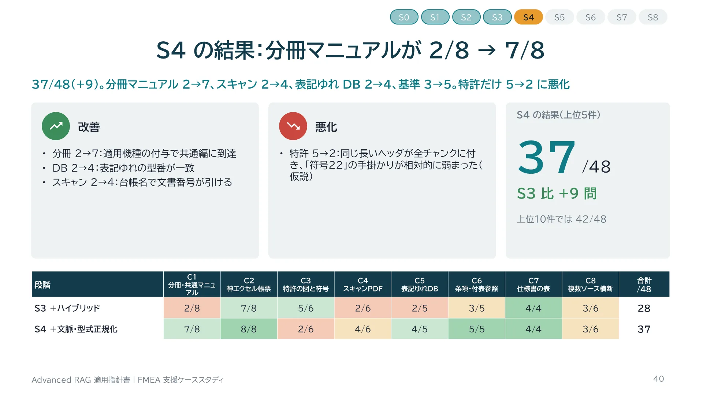
スライド 40 のテキストと解説
S4は全ステップで最大の改善で、37問になりました。分冊マニュアル（C1）は2問から7問へ大きく改善しました。不具合DB（C5）は型番の正規化によって「A200」「ＭＤＡ－２００」のような表記ゆれのレコードが拾えるようになり、スキャン（C4）は文書台帳名のヘッダで「8D-2024-021」などの文書番号で引けるようになりました。一方、特許（C3）は5問から2問に悪化しました。2つの特許の全チャンクに同じような長い文書ヘッダが付いたため、「符号22」のような短い手掛かりの重みが相対的に下がり、両特許のチャンクが似通ったためと考えられます。この悪化はS5の参照グラフで解消します。
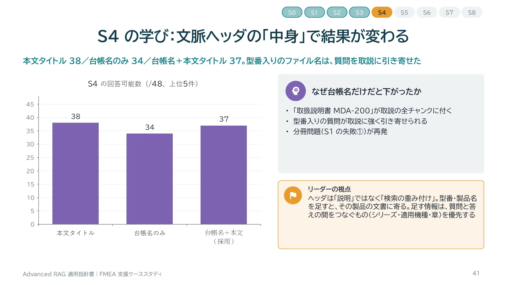
スライド 41 のテキストと解説
文脈ヘッダに何を入れるかで結果が変わることを、実際に3通りで比べました。最初は本文から抽出したタイトルを使い38問でした。しかしスキャン文書では承認印のせいでタイトルが「所見:…」になる問題があったので、文書台帳の名称（ファイル名）に置き換えたところ34問に下がりました。台帳名は「取扱説明書 MDA-200」のように型番を強く含むため、型番入りの質問が製品取説に引き寄せられ、分冊マニュアルの問題が再発したのです。最終的に、台帳名と本文タイトルを併記し、OCR文書だけは台帳名のみにして37問にしました。どの版も1〜4問の差なので誤差の可能性はありますが、「ヘッダは検索の重み付けそのものを変える」という教訓は重要です。
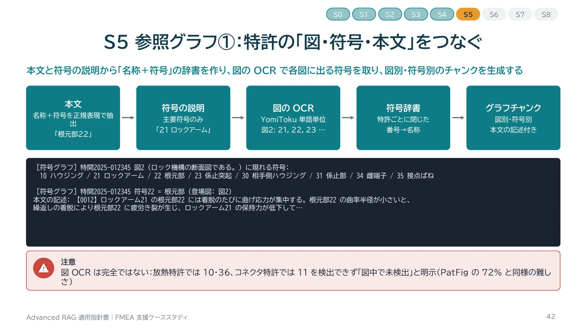
スライド 42 のテキストと解説
S5の1つ目は特許の符号グラフです。まず本文から「ロックアーム21」「根元部22」のような名称と符号の組を正規表現で抜き出し、符号の説明の表と合わせて符号辞書を作ります。助詞の「の」「は」で語を区切る簡単な規則で、名称の取り違えを防いでいます。次に、PDFから図の画像を取り出してYomiTokuで単語単位のOCRをかけ、各図に現れる数字を取ります。最後に、図ごとに「図2（ロック機構の断面図）に現れる符号: 10 ハウジング / 21 ロックアーム / 22 根元部…」、符号ごとに「符号22 = 根元部（登場図: 図2）＋本文の記述」というチャンクを作ります。符号の範囲は特許ごとに閉じているので、別の特許の符号23（放熱フィン）と混ざりません。
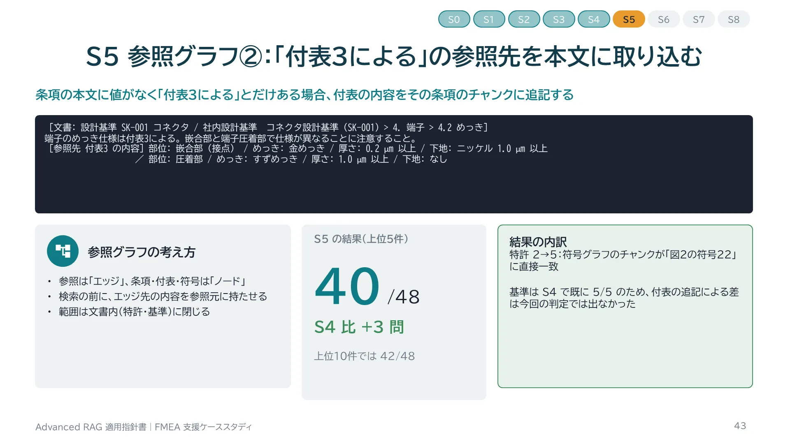
スライド 43 のテキストと解説
S5の2つ目は、社内基準の「付表3による」のような参照の解決です。条項4.2「めっき」の本文には「端子のめっき仕様は付表3による」とだけあり、値は文書末尾の付表3にあります。条項と付表が別々のチャンクになると、「嵌合部のめっき仕様は？」という質問に条項4.2が当たっても値がありません。そこで、同じ文書内の付表の行を、参照している条項のチャンクに追記しました。前作で学んだ「参照主義」の文書を、検索用に逆展開する処理です。
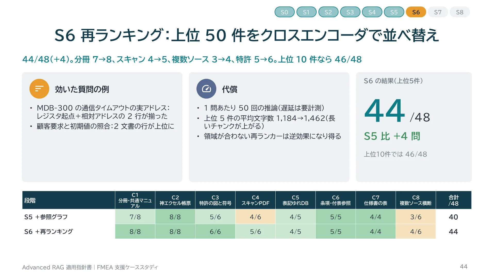
スライド 44 のテキストと解説
S6では、ハイブリッド検索の上位50件を、日本語のクロスエンコーダcl-nagoya/ruri-v3-reranker-310mで並べ替えてから上位5件を取りました。44問、上位10件なら46問です。再ランキングは質問とチャンクを一緒に読むので、「MDB-300の通信タイムアウトの実アドレス」のように、Bシリーズのレジスタ起点と相対アドレスの2行が必要な質問で、両方を上位に引き上げられました。前作で見たBRIGHTのように領域が合わないと逆効果になることもありますが、今回は全カテゴリで悪化はありませんでした。代償として、1問あたり50回のクロスエンコーダ推論が増えます（本検証では遅延を計測していないので、本番ではp95遅延を測ってください）。
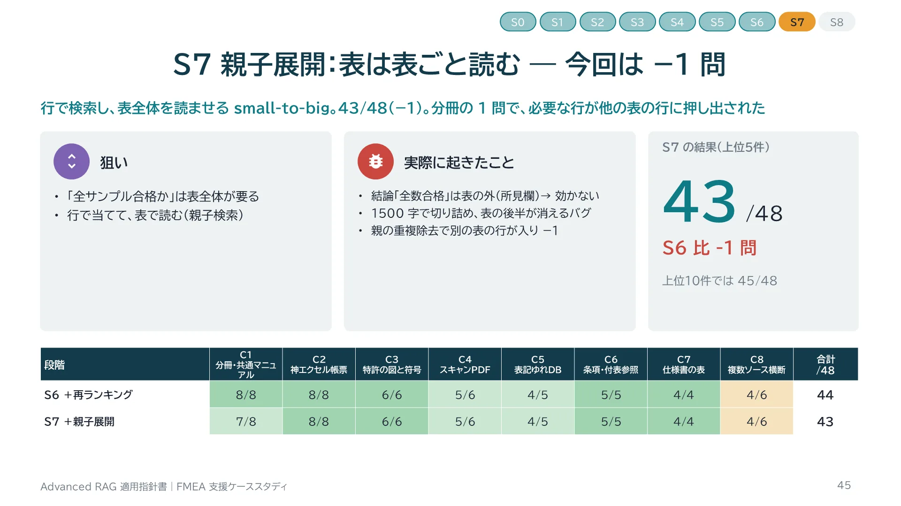
スライド 45 のテキストと解説
S7は前作の親子検索です。表の1行で当たったら、その表全体（親）に差し替えてLLMに渡します。狙いは「全サンプル合格か」のような、表全体を見ないと答えられない質問でした。結果は43問で1問減りました。分冊マニュアルの質問で、親に差し替えたことで同じ表の行の重複が除かれ、代わりに入った別の表の行で必要事実が足りなくなったためです。実装中には、親の文字数を1500字で切り捨てたせいで、大きな表の後半の行が消えるバグもありました（大きな表は展開しない、に修正）。狙っていた試験報告書の「全数合格」は、結論が表の外の所見欄にあるため、表を展開しても解決しませんでした。
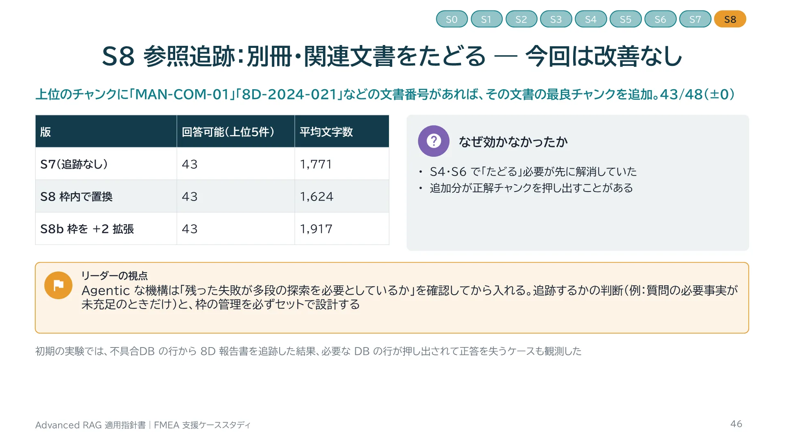
スライド 46 のテキストと解説
S8は、前作のAgentic RAGを単純化した参照追跡です。上位のチャンクが別の文書番号を参照していたら、その文書に絞った検索で最良のチャンクを取り、最大2件まで加えます。枠内で置き換える版も、枠を2件増やす版も、43問で改善しませんでした。理由は2つあります。S4の適用機種の付与とS6の再ランキングで、取説から共通編へ「たどる」必要がすでになくなっていたこと。そして、追加したチャンクが既存の正解チャンクを押し出す場合があったことです。初期の実験では、不具合DBの行から8D報告書を追跡した結果、必要な不具合DBの行が押し出されて正答が失われるケースも観測しました。追跡するかどうかの判断（ゲート）と、枠の管理がないと、Agentic的な機構はコストだけを増やします。
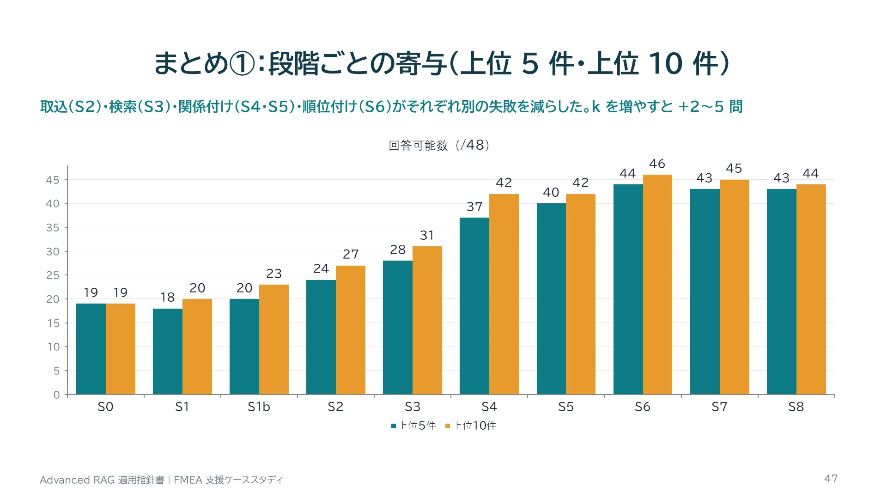
スライド 47 のテキストと解説
全段階の回答可能数を、上位5件と上位10件で並べました。上位10件にすると、多くの段階で2〜5問増えます。コンテキストを増やすことで救える質問がある一方、上位5件で44問、上位10件で46問という差は、コストと遅延に見合うかで判断します。注目すべきは、S1とS1bの差（検索だけの改善）よりも、S1とS2の差（取込の改善）、S3とS4の差（関係付け）のほうがずっと大きいことです。
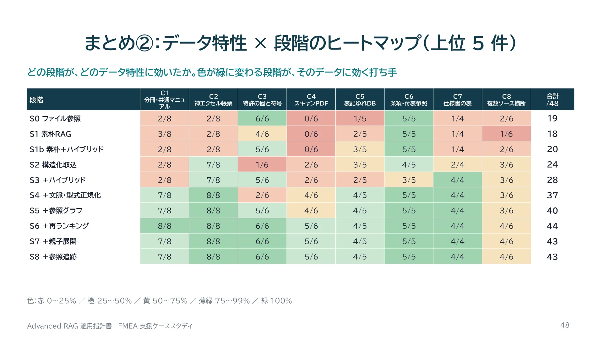
スライド 48 のテキストと解説
カテゴリごとの回答可能数を色で示しました。分冊マニュアル（C1）はS4で緑に変わり、神エクセル（C2）はS2で、特許（C3）はS3とS5で、スキャン（C4）はS2とS4とS6で段階的に、仕様書の表（C7）はS3で改善しています。社内基準（C6）は最初から答えられていて、S2やS3でかえって下がっています。データ特性によって効く打ち手が違うことが一目で分かります。これがPart Eの適用指針の根拠です。
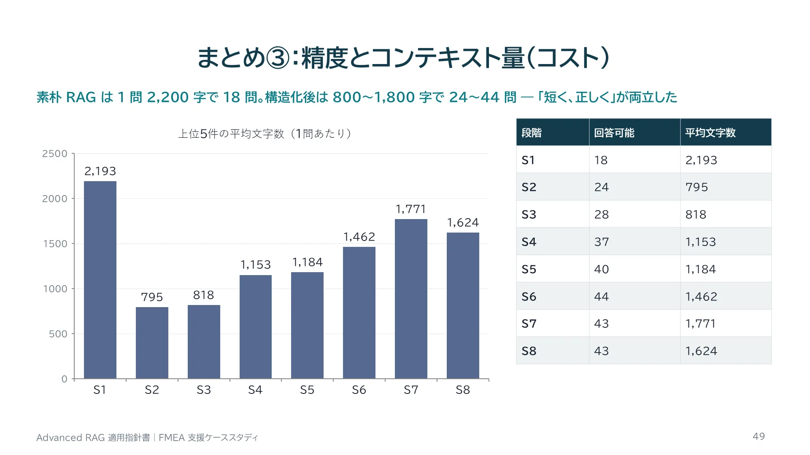
スライド 49 のテキストと解説
上位5件の合計文字数、つまりLLMに渡すコンテキスト量の平均です。素朴なRAGは500字チャンクを5件なので約2,200字で、答えられるのは18問でした。構造化後は1チャンクが意味の単位で短くなり、約800字で24問になりました。文脈ヘッダ（S4）や再ランキング（S6）で文字数は増えますが、それでも1,500字前後です。親子展開（S7）は表全体を渡すので最も長く、精度は上がりませんでした。LLMのコストと遅延はコンテキスト量にほぼ比例するので、構造化はコスト削減の打ち手でもあります。
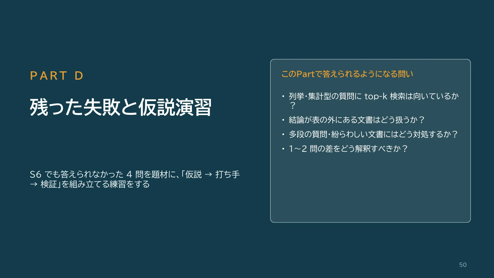
スライド 50 のテキストと解説
Part Dはテックリーダーとしての思考訓練です。残った失敗のそれぞれに、仮説・打ち手・検証方法・完了条件を付けて示します。
スライド 51 のテキストと解説
S6（上位5件）で答えられなかったのは4問です。C5-1は「MDA-200でコネクタが原因の不具合事例は？」という列挙型の質問で、該当する3件をすべて上位5件に入れる必要があります。似たレコードが数十件ある中で、類似度の上位だけを取る方式には向いていません。C4-5は振動試験の結論「全数合格」が表の外の所見欄に1行だけある文書です。C8-2は不具合DBの番号から8D報告書の根本原因へ、2段たどる必要があります。C8-5は「めっき厚不足」が過去FMEAの原因欄に何度も出てくるため、試験報告書の実例がFMEAの行に負けます。どれも検索パラメータの調整では解決しにくく、別の種類の打ち手が必要です。
スライド 52 のテキストと解説
列挙型の質問に対する仮説は、「類似度の上位k件では、似たレコードが多いと該当レコードを網羅できない」です。打ち手として、S4で付与した正規化型式を条件にした構造化フィルタを試しました。不具合DBに絞り、「正規化型式: MDA-200」を含み、かつコネクタ・半嵌合・抜け・接続のどれかを含むレコードを検索すると、正解の3件がすべて取れました。表記ゆれの「MDA200」「A200」「ＭＤＡ－２００」も、正規化型式で一括で拾えています。本番では、正規化型式を本文ではなくキーワード型のフィールドに持たせ、件数の集計はOpenSearchの集計機能か、DBへのSQLに任せます。LLMには、絞り込んだ結果の一覧を渡して要約させます。
スライド 53 のテキストと解説
C4-5の仮説は「試験報告書の結論は表の外の所見欄にあり、行単位のチャンクと親子展開（表）では届かない」です。打ち手として、2ページ以下の短い報告書は文書全体を親にする（文書単位の small-to-big）ことが考えられます。C8-2の仮説は「不具合DBの行にある8D番号から8D報告書の根本原因へ、2段の探索が必要」です。S8の参照追跡はこれを狙いましたが、枠の管理がなく正解を押し出しました。打ち手は、質問に必要な事実（根本原因）が未充足のときだけ追跡するゲートを入れ、追加分は枠を広げて加えることです。どちらも、対象となる質問を5〜10問追加して、改善と他カテゴリの悪化の両方を確認します。
スライド 54 のテキストと解説
C8-5では、「めっき厚不足」という語が3つの過去FMEAの原因欄に定型句として出てくるため、試験報告書の「金めっき厚が0.08µm」という実例より上位に来てしまいます。仮説は「実例を探す質問なのに、テンプレート的な文書が勝っている」で、打ち手は、質問の意図（実績・事例を探す）を判定して文書の種類（試験報告書・不具合DB）を優先するブーストを掛けることです。また、本検証は48問なので、1問の差は約2ポイントで、偶然の範囲に入ります。S7やS8の±1問を「悪化した」と断定せず、効果がなかったと読むのが妥当です。採否の判断には、対応のある比較（同じ質問で前後を比べる）と、カテゴリ別の確認、必要なら質問の追加を行います。
スライド 55 のテキストと解説
Part Eは実プロジェクトで最も参照するカードです。期待値の数字は本検証での実測で、自分たちのデータでの目安として使ってください。
スライド 56 のテキストと解説
本検証の結果から、データ特性ごとにどの打ち手が効いたかをまとめた表です。◎は3問以上の改善かそのカテゴリの全問正解化、○は1〜2問の改善、△は効果なし、✕は悪化です。たとえば特許は、構造化取込で悪化し、ハイブリッドと参照グラフで回復しています。このように、同じ打ち手でもデータによって逆の効果を持つことがあります。新しいデータが来たら、まずこの表の近い行を見て、最初に試す打ち手と、悪化に注意すべき打ち手を決めてください。
スライド 57 のテキストと解説
分冊マニュアルの指針です。最も効いたのは、型番とシリーズの関係をデータとして索引に持たせることでした。期待値は、素朴なRAGで3/8、検索だけ改善しても2/8で、適用機種の付与で7/8、再ランキングで8/8です。OpenSearchでは、正規化型式とシリーズをキーワード型のフィールドに持たせ、適用機種の配列でフィルタできるようにするのが本番向けの設計です。検証は、全シリーズの型番で共通編の値を問う質問を作り、取説への誤誘導がないことを確認します。
スライド 58 のテキストと解説
神エクセルの指針です。取込の構造化だけで2/8から7/8に改善し、文脈付与で8/8になりました。ファイルを丸ごと渡しても2/8で、正しいファイルを渡しても値と列名の結び付きが分からないことが原因です。本番では、行のテキストに加えて、S・O・D・APなどを個別のフィールドとして持たせると、「AP=Hの故障モード一覧」のような集計型の質問を、RAGではなく構造化検索で答えられます。
スライド 59 のテキストと解説
特許の指針です。構造化取込でかえって悪化した唯一のカテゴリで、段落を細かく分けると名称と符号が離れるためです。ハイブリッド検索で回復し、符号グラフで図と符号を結ぶと安定しました。図のOCRは完全ではないので、検出できなかった符号は「図中で未検出」と明示し、本文の記述で補います。
スライド 60 のテキストと解説
スキャンPDFの指針です。素朴な抽出では0問で、OCRで表を戻して2問、文書台帳のメタデータでヘッダを付けて4問、再ランキングで5問でした。OCRは数値の誤読を起こすので、検索の改善とは別に、回答に原本へのリンクを付けて人が確認できるようにすることが重要です。本検証で使ったYomiTokuのOSS版は非商用ライセンスなので、本番では商用ライセンスか別のOCRを選定してください。
スライド 61 のテキストと解説
表記ゆれDBの指針です。型番の正規化で2/5から4/5に改善しました。残った1問は列挙型の質問で、top-k検索では3件中1件しか取れませんでしたが、正規化型式によるフィルタでは3件すべて取れました。不具合DBは本来データベースなので、全部をRAGで扱わず、質問の型に応じて構造化検索とRAGを使い分けるのが正解です。
スライド 62 のテキストと解説
条項・付表参照の指針です。もともと文書が短いので素朴な方式でも5/5でしたが、構造化とハイブリッドで一時的に3/5まで下がりました。短い条項のチャンクが、他の長い文書の段落に類似度やBM25で負けたためです。文脈ヘッダで文書名と条項番号を付けて回復しました。改善の途中で既存の正答が失われることがあるので、カテゴリ別の回帰確認が必須です。
スライド 63 のテキストと解説
仕様書の表の指針です。表を行単位で取り込み、ハイブリッド検索を入れると4/4になりました。AWG18や突入電流のような用語は、意味の埋め込みよりBM25の文字列一致が得意です。表の注記が値の意味を変えることが多いので、注記を各行に付けることも重要です。
スライド 64 のテキストと解説
複数ソース横断の指針です。FMEAやDRBFM作成支援の本丸で、最も難しいカテゴリでした。素朴なRAGでは1/6、構造化で3/6、再ランキングで4/6、上位10件にすると5/6です。各ソースを単体で正しく取れることが前提で、その上で、多段の探索はゲート付きで狙い撃ちします。参照追跡を無条件に入れると正解を押し出すことを、本検証で確認しています。
スライド 65 のテキストと解説
Part Fは、検証構成から本番構成への拡張です。権限・版・削除の扱いは前作のPart 4を参照してください。
スライド 66 のテキストと解説
検証では、チャンク集合ごとに1つのインデックスを作りました。本番では、検索対象のチャンクを1つのインデックスにまとめ、文書の種類をdoc_typeフィールドで区別するのを推奨します。ソースごとにインデックスを分けると、BM25のスコアが比較できず、横断検索の融合が難しくなるためです（分けるならRRFで融合）。表全体や文書全体の親テキスト、型番とシリーズの辞書、文書間の参照エッジは、検索対象ではないので別のインデックスやストアに持ちます。版の切り替えは、エイリアスを新しいインデックスに付け替える方式にすると、無停止で再索引できます。
スライド 67 のテキストと解説
チャンクインデックスのフィールド設計です。検証で使ったのは上4行です。本番では、前作で学んだ権限と鮮度の要件を満たすために、acl、version、valid_from、valid_to、deletedを追加し、検索時にフィルタします。正規化した型番やシリーズ、文書の種類はキーワード型にして、絞り込みと集計に使います。parent_idとrefsは親子展開と参照追跡に使います。ocr_confidenceは、OCR由来のチャンクに注意書きを出すために使います。
スライド 68 のテキストと解説
本番のクエリパイプラインの全体像です。まず質問の型番を正規化してシリーズを補い、質問の型を判定します。列挙や集計の質問は構造化フィルタと集計に回し、事実照会はハイブリッド検索と再ランキングで上位k件を取ります。表や短い報告書は親子展開で全体を読ませ、必要な事実が足りないと判定されたときだけ参照追跡を行います。最後に権限を再確認して、根拠のリンク付きでLLMに渡します。本検証で効果が確認できたのは、正規化からハイブリッド＋再ランキングまでです。親子展開とゲート付き追跡は、残った失敗に合わせて検証してから入れます。
スライド 69 のテキストと解説
Part Gでは、本ケースを実プロジェクトの進め方に翻訳します。
スライド 70 のテキストと解説
部下への指示のテンプレートと、本ケースから作った3つの例です。指示には、対象のデータ特性と失敗の症状、仮説、打ち手、評価に使う質問セットと指標、完了条件、そして悪化の確認範囲を必ず入れます。とくに最後の悪化の確認を入れないと、本検証のS2やS4で起きたように、あるカテゴリを改善して別のカテゴリを壊すことに気付けません。
スライド 71 のテキストと解説
ステークホルダーへの期待値の伝え方の例です。本検証の実測を、データ特性ごとに「素朴なRAG」「推奨構成（S6）」「残る課題」の3列でまとめました。数字は架空のデータでの実測なので、そのまま約束には使えませんが、「どのデータが難しく、何をすればどこまで行けるか」という見通しを示すには十分です。実プロジェクトでは、最初の2〜3週間で自社データの代表的な質問を集め、この表の自社版を作ってから計画を合意します。
スライド 72 のテキストと解説
レビューのチェックリストです。本ケースで起きた不具合は、Excelのヘッダが略号だけになる、PDFの表の文字順が崩れる、OCRでタイトルが消える、親の切り詰めで表の後半が消える、ファイル名のヘッダが質問を取説に引き寄せる、の5つでした。どれも指標が動いている状態で起きていて、出力を目で見て初めて気付きました。レビューでは、数字の前に中身を見ることを習慣にしてください。
スライド 73 のテキストと解説
本ケースを実プロジェクトの計画に落とした例です。最初の3週間で、6つの入力それぞれから代表ファイルを集め、データ特性を分類し、カテゴリごとに5〜8問の評価セットを業務担当者と作ります。そして素朴な取込での上限と、S1の結果から失敗の内訳を出します。次の段階で、上限を上げる取込の構造化を形式ごとに進め、その後、検索と関係付け、再ランキングと進めます。各段階のゲート条件は、カテゴリ別の目標と、他カテゴリの悪化がないことです。
スライド 74 のテキストと解説
本検証の限界です。データは実在企業の文書構造を再現した架空のもので、規模は24ファイル・48問と小さく、1問の差は誤差の範囲です。評価は検索結果に必要事実が揃うかであり、LLMの回答の正しさは測っていません。モデルは日本語の埋め込みと再ランキングを1種類ずつ使っただけで、他のモデルでは結果が変わり得ます。各構成は1回ずつ実行しており、乱数による揺らぎは評価していません。また、正解の判定に使う正規表現は、構造化した出力の形式（「発生度(O): 4」）に合わせて書いているので、素朴な方式には不利な面があります。ただし、素朴な方式ではLLMが値と列名を推測するしかないという点は、実務上も同じ問題です。
スライド 75 のテキストと解説
再現手順です。生成スクリプトはgenフォルダにあります。コーパスの生成、Wordによる PDF 化、スキャン化、OCR、チャンク化、索引、評価の順に実行します。Word・ExcelのCOMを使う部分はWindows側のPowerShellで実行します。
スライド 76 のテキストと解説
実データの構造調査で参照した主な公開資料です。いずれも構造の参考にしたもので、内容は複製していません。